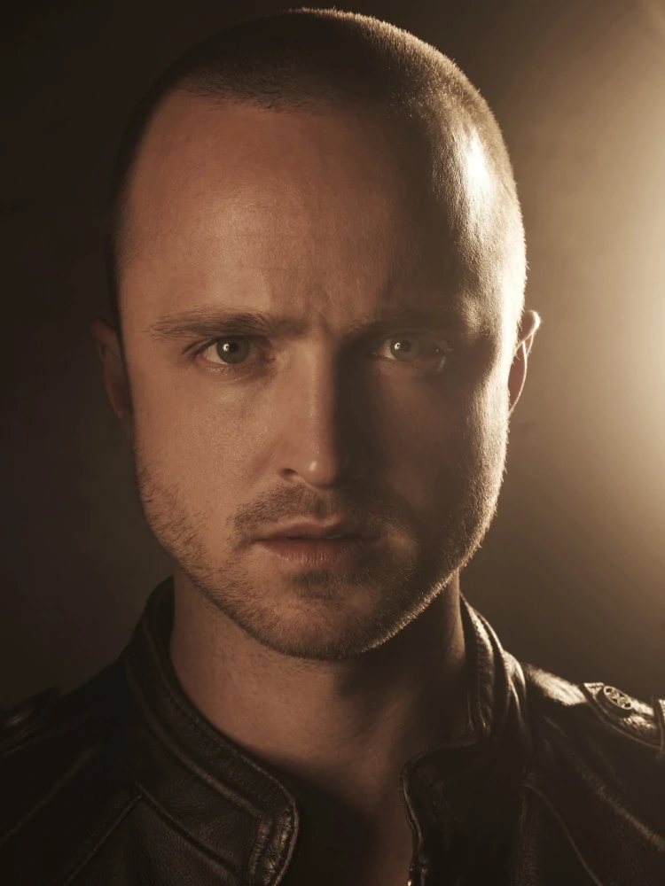

Jesse Pinkman
Jesse Bruce Pinkman es el compañero de Walter White en el tráfico de metanfetamina. En el instituto, Jesse era un consumidor, fabricante y traficante de poca monta de metanfetamina. Era un estudiante que prestaba poca atención a las clases de química de su profesor, el propio Walter. Años después, Jesse se dedica al tráfico de droga con el seudónimo "Cap'n Cook" y añade polvo de chili a su producto para caracterizarlo.
Heisenberg

"Heisenberg", es un químico y profesor de química de Albuquerque, Nuevo México que, tras ser diagnosticado con cáncer de pulmón inoperable, decide empezar a fabricar metanfetamina para poder mantener a su familia provista de cara al futuro.
Heisenberg es descubierto por Hank
Walter en ese momento sintió el verdadero terror.